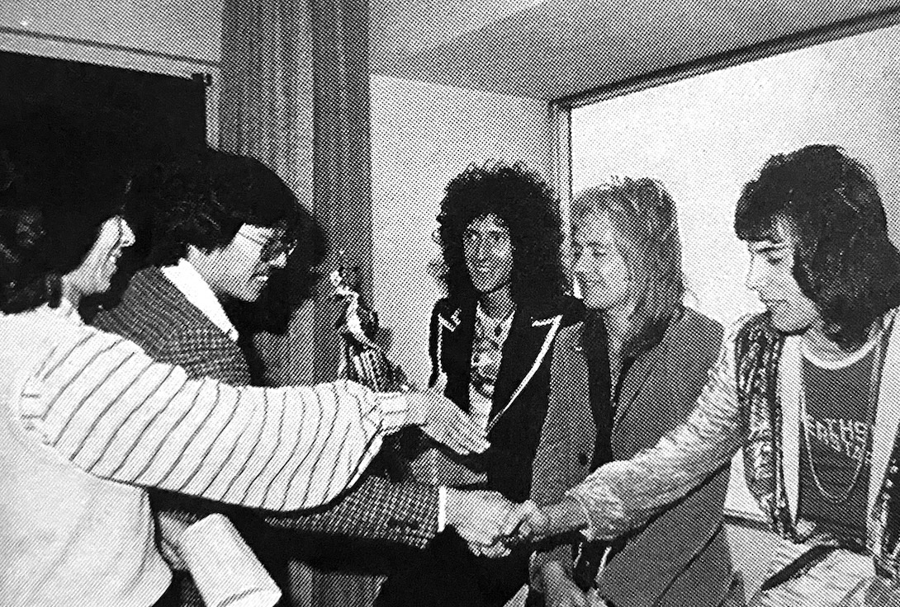
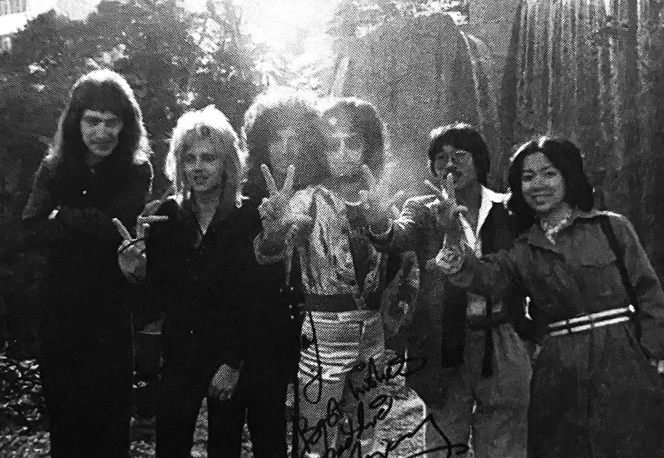
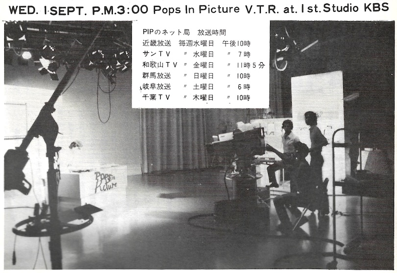
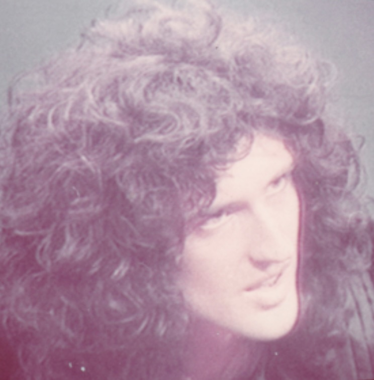
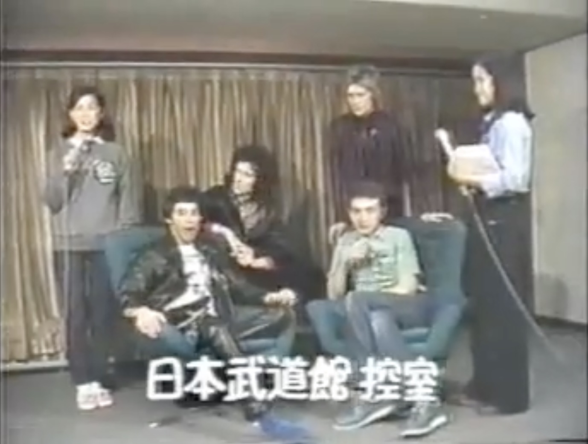
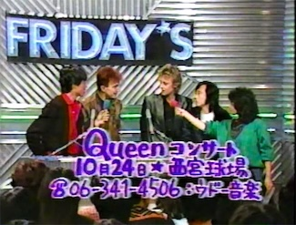
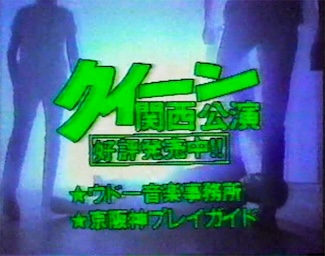
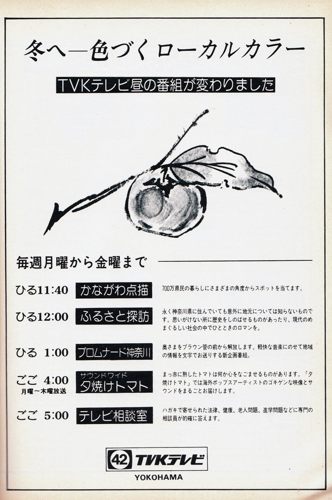

Ginza NOW! was a variety TV show that ran on Tokyo Broadcasting Station from 1972 to 1979. Queen made two appearances on the program, one in 1975 and again in 1976. Although some acts played music on the show, Queen did not due to time constraints.
Watanabe Productions initially had trouble getting Queen booked for appearances on TV because although they were becoming popular with young people, TV and radio execs had not heard of them yet. Ginza NOW! was one of the only shows that would book them on their first tour in 1975. They were originally supposed to make their appearance as soon as they arrived in Tokyo on April 17th, but because their plane was delayed, their fans were disappointed that evening when the show aired and they were nowhere to be found. Instead they were rebooked for May 1st, which was the last date of the tour—having played the rest of the country, Queen came back to Tokyo for one last show at the Budoukan, and were available for an appearance. Consequently, their May 1st show at the Budoukan began about an hour late: the taping of Ginza ran long. Unfortunately, I haven't been able to find any stills, footage, nor transcripts of this appearance.

Queen is interviewed at the Tokyo Pacific Hotel in 1976.
Here is an anecdote from Akihito Takayoshi, the director of the program at the time:
"We asked Queen to stop by when they were back in town to play the Budoukan on the night we were playing a promo clip for one of their songs, and they were all very cooperative. They didn't complain at all about the studio dressing room being small and dirty; on the contrary, they seemed pleased with it. They said it reminded them of the live music venues they used to play in. In a meeting held just before the broadcast, Freddie said something unexpected—he wanted a McDonald's hamburger, so I had one bought for him right away and offered it to him, but he said he couldn't eat a whole one. He broke it in half with his hands and gave half to me. He was such a friendly guy."
When Queen returned to Japan in 1976, they once again made an appearance, but this time the Ginza staff came to their hotel room at the Pacific Hotel in Shinagawa to interview them. One of the interviewers, Miki Mizuno, was fluent in English and was able to interview them without the use of an interpreter. She says:

"I had been listening to Queen's records for a while by now but when I actually met them, my eyes were instantly drawn to Brian May. He was so beautiful and I was completely captivated! He was truly delightful and so intelligent to boot. It was so exciting! Of course he was like that. I'll never forget how thrilled I was that day. At the end of the interview, we asked the four of them a favor: while taking photos in the hotel garden, we asked them to pose for the famous Ginza NOW! commercial break bumpers while saying "COMMERCIAL NOW!" They were very obedient and did a great job! They gave off an undeniable sense of character."
After this interview, a rather audacious request was made of them to sign the coffee cups they had drank from during the interview. Those cups were entered into raffles as prizes for viewers. The fan response was incredible and this became a recurring segment on the show.
It's said that Queen's appearance on Ginza NOW! greatly impacted the show's popularity, and more foreign acts would appear throughout the 70s. The show ended in September of 1979, but there's no indication that Queen made any other appearances on this show on their spring 1979 tour. Sadly, the footage from their 1975 and 1976 interviews can be added to a pile of lost Queen media—I haven't seen Ginza NOW! even mentioned in any English-language Queen histories.
Pops in Picture

Pops in Picture ("P.I.P.") was the name of a music program that was broadcast in the Kyoto area on KBS (Kinki Broadcast Station) from 1973 - 1980. It was hosted by Hisashi Kawamura (affectionately known as "Dede"), who was occasionally joined by Rock Magazine editor-in-chief Agi Yuzuru, whose schtick was that he had always just returned from scouting the music scene in London "yesterday". Information on Queen's appearances on this program are anecdotal and difficult to find, but it seems that this show was most likely the first to introduce them to a Japanese television audience sometime in the first half of 1974. Reportedly, an EMI exec appeared on the show to introduce Queen I, retitled Princess of Terror for Japanese audiences, and played a promo video clip of Liar (which version is unclear).
A notice in Queen Express no. 7 (one of the newsletters of the short-lived first Japanese Queen Fan Club) mentions a screening of Queen on Pops on May 15th, 1975, with "new footage", possibly from their recent 1975 Japanese tour, as the May 1st gig was reportedly filmed and at least partially shown on Japanese TV. Since home VCRs were still rare at this point, even in tech-forward Japan, music TV footage was often copied over for film screenings held for fan groups around the country. Kids would also hold up home audio cassette recorders to their TV sets to record broadcast audio—a want ad in issue 3 of the Official Japanese Fan Club magazine lists an audio cassette of Pops amongst their list of coveted items.
I don't believe Pops in Picture ever had artists live in the studio, but it seems very likely that Queen was featured several times throughout the rest of the 70s and 1980. As KBS has been reorganized and restructured several times since then, it seems unlikely that any video footage survives, but the aforementioned film copies may still be out there somewhere. As it is, the Internet doesn't turn up much footage at all, but there a lot of fond memories of this program.
Star Sen
スター千一夜, SUTAA sen'ichi ya, or Star Sen for short ("1001 Nights of Stars"), was a TV program that aired on Fuji TV from 1959 to 1981. Queen recorded an appearance on April 20th, 1975, and the show was broadcast on April 28th. There are many anecdotes of young fans recording the audio of the interview live off the TV onto cassette tapes in order to relive the magic later. One of these recordings has made its way to youtube, but no video footage has surfaced yet online. Japanese fans have reportedly reached out to Fuji TV over the years to inquire about this footage and have been informed that the tapes were wiped or disposed of long ago, effectively making this appearance lost media. However, the second issue of the Official Japanese Fan Club Magazine, released in early 1976, explicitly notes that this video footage was transferred to film in order to be screened at fan club get-togethers, which means there's a chance this footage may still exist somewhere in film form. (I believe the Japanese Division of the fan club was rolled over into the UK-based Fan Club after Freddie's death in 1991, and I don't know what became of their archives.). Until then, only a few blurry and monochrome images can be found: photos taken of live TV screens at home by fans, a few of which were printed in a fan club magazine in 1979, as well as some grainy black and white photos from the set printed in an issue of Ongaku Senka in 1975.

Wakai Kodama
Wakai Kodama, or "Young Echo", was a music request program that aired on NHK Radio 1 from 1970 to 1978. Queen made two appearances on this show—one on April 25th, 1975, which was broadcast the following evening, and another during their 1976 tour. Like Star Sen, these appearances were recorded by Japanese fans onto cassette tapes, and snippets of these can be found on youtube.. I've read anecdotes that these interviews were not captured in full due to the radio show being longer than the cassette tapes of the time; I'm not sure if that's true or not. Both Wakai Kodama appearances and the afore-mentioned Star Sen interview appear on an Uxbridge bootleg compilation of Queen interviews from 1975 and 1976, but no running times are listed.
600 kochira jouhoubu
Roughly translated into English, the title of this TV program was "600 Information Department", and it was actually a children's program that was stylized like a news broadcast. It may be surprising to see Queen on a children's show, but 600 had a regular segment where celebrities and artists were interviewed.

Queen's appearance took place during their 1979 tour and this interview is pretty well-known; it can be viewed on youtube. It's notable for Freddie attempting a bit of Japanese: watashitachi ha mata nippon ni korete ureshii desu—"We are happy to be back in Japan".
Yoru no Hit Studio
Factions of Queen made appearances on Fuji TV's Yoru no Hit Studio ("Night Hit Studio") at least twice. John and Roger made an appearance in October of 1982, and three members of Queen (minus Freddie) made an appearance in 1985.
FRIDAY'S

John and Roger made an appearance on this program on October 22nd, 1982 to promote the band's Nishinomiya performance two days later. Apparently while floor seats had sold out almost immediately, there were some seats left in the stands, so it was hastily arranged for the two to make a promotional appearance on the show.

There was also a regional commercial that was run to try to promote ticket sales to the Nishinomiya show, featuring scenes from the Calling All Girls music video.
Waratte Ii Tomo!
John and Roger made a promotional appearance on the Fuji TV variety show Waratte Ii Tomo! ("It's Good to Laugh!") in 1984. They were there to promote the new album The Works, as Queen didn't actually play any shows in Japan in 1984. This appearance is known for being an example of stereotypically bizarre Japanese variety show shenanigans.
"Tomato Programs"

Kanagawa TV was known for its series of entertainment programs with "Tomato" in the name, including Music Tomato ("Myuutoma"), Funky Tomato ("Fantoma"), Yuuyake Tomato ("Yuutoma"), etc. There are several anecdotes online of Queen appearaing on either Fantoma or Yuutoma, probably in 1979 or the early 80s, but details are unclear at this time.
NHK Young Music Show
Young Music Show was a Western music showcase that aired irregularly on NHK from 1971 to 1986. Queen was the feature at least twice: August 19th 1981 and June 1st 1985.
The NHK archives lists the 1981 program playlist as follows:
Now I'm here
Another One Bites the Dust
You're My Best Friend
The Flash Theme
Let Me Entertain You
Don't Stop Me Now
Killer Queen
Crazy Little Thing Called Love
Sheer Heart Attack
Save Me
others
The full 1981 broadcast was listed on youtube at some point but was taken down due to copyright issues. The screenshot that appeared with it looks like it was taken from the 12/26/79 "Concert for Kampuchea" footage of Don't Stop Me Now, but as other songs on the playlist were released after 1979, it's safe to say that not all the footage shown came from this date.
The 1985 broadcast reportedly showed most of the band's May 11th 1985 concert at Yoyogi National Stadium. The NHK archives lists the 1985 playlist as follows:
Tear It Up
Tie Your Mother Down
Under Pressure
Seven Seas of Rhye
Keep Yourself Alive
Liar
others
1979 Live in Japan
Queen's 1979 tour of Japan was notably rough due to the condition of Freddie's voice, which deteriorated after he came down with a cold. However, due to extraordinary demand, an extra night in Tokyo was added and it was this final show at the Budoukan on April 25th, 1979 that was recorded for TV. (It is sometimes erroneously documented as the 24th.) A fan recollection from 1992 notes Freddie's condition, the fact that he took a tumble, and that the TV cameras mercifully didn't capture this moment. According to a flyer linked on Queenlive.ca, footage of this show was broadcast on Japanese TV a couple of times in 1982. Apparently it was meant to be shown on TV not long after the actual concert in 1979, but was postponed for a couple of years, which led to an angry letter-writing campaign to NHK by fans in the early 80s. This footage has made its way to bootlegged Japanese VHS tapes and ultimately youtube.


{kind=link}